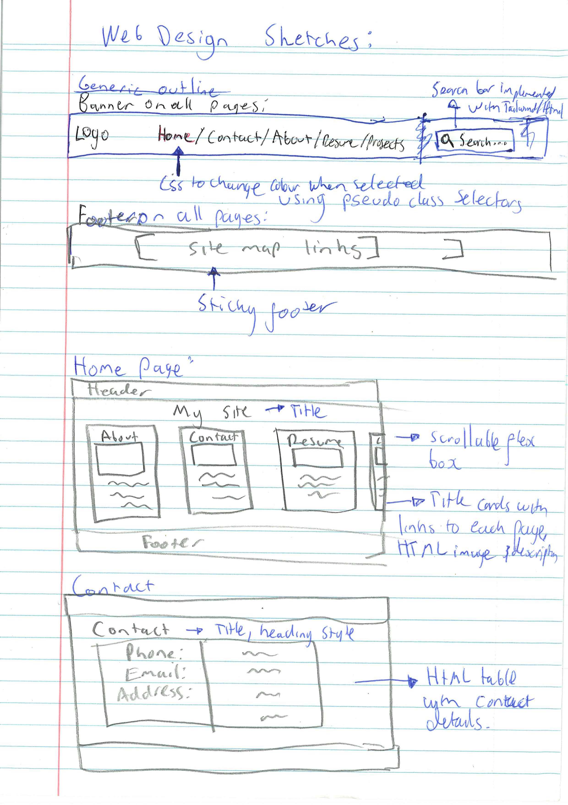
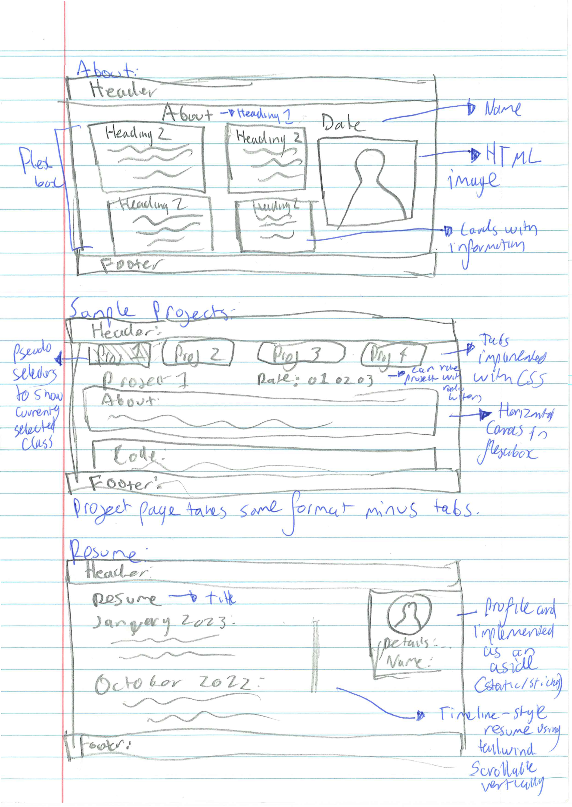

Web Technologies – Final Project
This website is my current project and my submission for the Web Technologies Final Project
Goal
In this project, we are to complete a series of steps to create your own "mobile first", responsive, Portfolio Website - this is following on from the previous phases that built up the skills to be used in this final submission.
Methods
In this project, we have designed several pages, created the layout for the pages and used version controls as we progressed.
Content
Throughout the project we do the following:
- Initial project setup
- Version control
- Wireframe designs
- Use of imagery
- HTML, CSS & JavaScript
- Use of Tailwind
- Test HTML is displayed as expected using at least two different browsers with different web rendering engines, and
- Publish our site on GitHub pages.
Wireframes/Sketches
In the initial steps of this project, we were required to design all the pages by hand and wireframe. Samples of this can be seen below.

